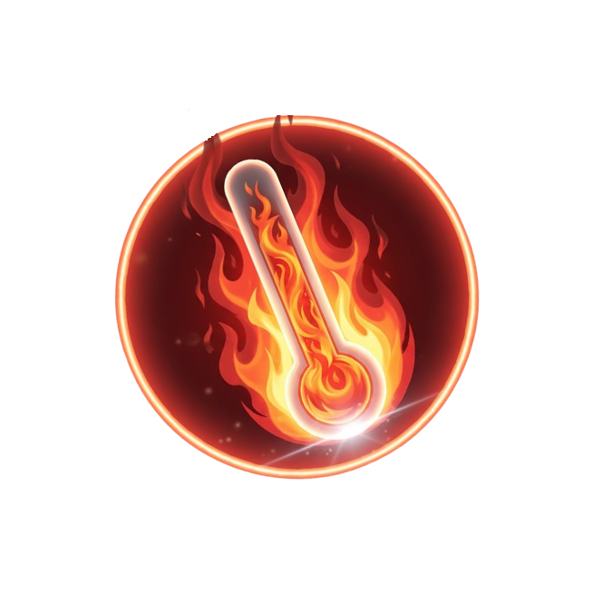

The scorching twin of Earth
Venus is often referred to as Earth’s twin due to its similar size and composition, but its environment is radically different. Its extremely dense atmosphere, composed mostly of carbon dioxide, causes an uncontrolled greenhouse effect, driving temperatures above 460 °C. The planet is covered by thick clouds of sulfuric acid that prevent any direct observation of its surface from space. Beneath this toxic layer lie vast volcanic plains, mountains, and numerous volcanoes, some of which may still be active. Venus has a very slow and retrograde rotation: the Sun rises in the west and sets in the east. It represents an extreme example of climate imbalance, crucial for understanding the evolution of rocky planets, including Earth.
